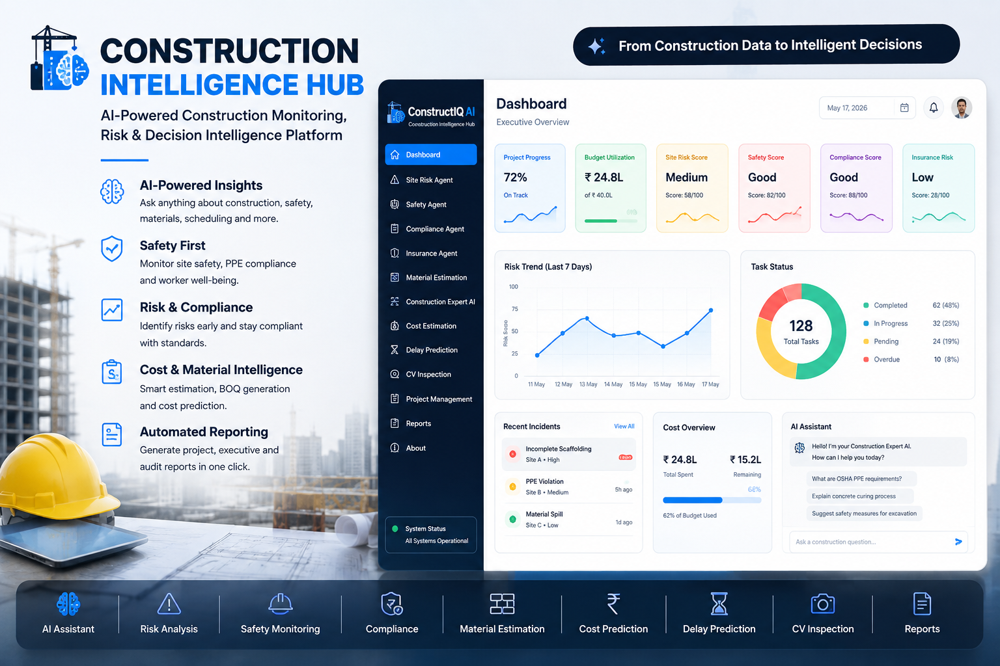

ConstructIQ AI

An AI-powered construction intelligence platform designed to help teams understand project risk, safety, compliance, materials, and rework through a unified decision-support interface.
CORE CAPABILITIES
- Construction project dashboard
- Safety & risk intelligence
- Compliance agent
- Insurance agent
- Material estimation
- Rework intelligence
- AI-powered project Q&A
- Construction document intelligence
TECHNOLOGY
Python
Streamlit
Pandas
Plotly
AI / LLM technologies
SQLite